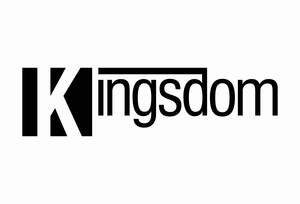

Trade Mark Journal No.2025/046 14 November 2025
UK00004288833 4 November 2025 (11,20,21)

- Class 11
- Hot air bath fittings; bath tubs; bath tubs for sitz baths; Turkish bath cabinets, portable; bath fittings; heaters for baths; bath installations; bath plumbing fixtures; bidets; anti-splash tap nozzles; toilets, portable; cocks for pipes and pipelines; faucets for pipes and pipelines; spigots for pipes and pipelines; taps for pipes and pipelines; oven fittings made of fireclay; flushing tanks; hair driers; water distribution installations; drying apparatus; pipes [parts of sanitary installations]; water-pipes for sanitary installations; water conduits installations; toilets [water-closets]; water closets; showers; water purification installations; water filtering apparatus; cooling installations for water; fountains; pressure water tanks; water sterilisers; purification installations for sewage; filters for drinking water; water purifying apparatus and machines; regulating accessories for water or gas apparatus and pipes; safety accessories for water or gas apparatus and pipes; faucets; taps; washers for water faucets; washers for water taps; sanitary apparatus and installations; drying apparatus and installations; hand drying apparatus for washrooms; coils [parts of distilling, heating or cooling installations]; sterilisers; toilet bowls; toilet seats; mixer faucets for water pipes; mixer taps for water pipes; regulating and safety accessories for gas pipes; regulating and safety accessories for water apparatus; flushing apparatus; water flushing installations; sauna bath installations; shower enclosures; shower cubicles; sinks; urinals being sanitary fixtures.
- Class 20
- Curtain rings; silvered glass [mirrors]; cupboards; clips, not of metal, for cables and pipes; brush mountings; hat stands; dog kennels; clothes hangers; counters [tables]; trays, not of metal; coathooks, not of metal; hooks, not of metal, for clothes rails; drafting tables; towel dispensers, not of metal; racks [furniture]; clothes hooks, not of metal; bead curtains for decoration; scratching posts for cats; pet cushions; bathroom vanities [furniture]; bathroom stools; drawer organizers.
- Class 21
- Nozzles for watering hose; brushes; soap boxes; ceramics for household purposes; soap dispensing bottles; dishes for soap; soap holders; dustbins for household purposes; garbage cans for household purposes; refuse bins for household purposes; trash cans for household purposes; powder compacts, empty; containers for household or kitchen use; napkin rings; salad bowls; salt cellars; salt shakers; sprinklers for watering flowers and plants; table napkin holders; saucers; cups; clothing stretchers; buttonhooks; perfume sprayers; perfume vaporizers; painted glassware; shaving brushes; shaving brush stands; boxes of glass; coffee services [tableware]; baskets for household purposes; covers for dishes; kitchen utensils; baby baths, portable; litter boxes for pets; rails and rings for towels; towel rails and rings; toilet paper holders; indoor aquaria; mop wringers; waste paper baskets; pet feeding bowls; pet feeding bowls, automatic; valet trays [receptacles for small objects] for household purposes; tube squeezers for household purposes; stainless steel soap; paper towel holders.
wenzhou kingsdom sanitary wares co.,ltd
Representative: IBE Avocat - Isabelle Bertaux